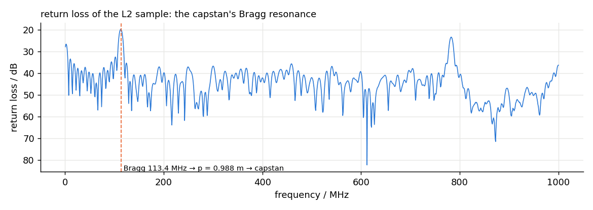
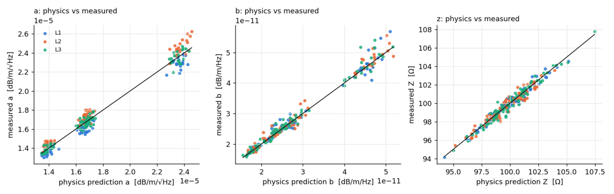
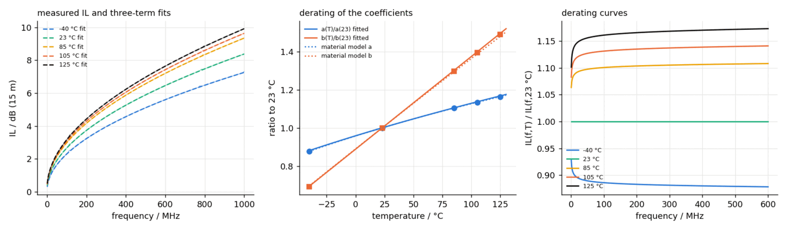

cableanalytics
Connects production-line records to measured high-frequency cable performance, and predicts one from the other.
The problem
A cable's high-frequency performance is decided on the extrusion line — conductor diameter, insulation concentricity, foaming, line speed — hours before any network analyser sees it. The laboratory measures the consequence; the factory sets the cause. In most organisations those two datasets never meet.
If they did meet, two expensive questions would get cheap answers: which process parameter is costing us margin, and what will this batch measure like — before it is measured, or even made.
What was built
The bridge between those datasets: physics first, statistics only for what the physics cannot see, and an honest interval on every prediction.
Takes
- A production dataset: 240 samples, 3 lines, 4 designs, 20 lots — nuisance factors deliberately included
- Inline gauge logs (diameter against length)
- Measured loss fits and impedance from cablecheck
- Climate-chamber sweeps for the derating fit
Produces
- Predicted loss coefficients and impedance with 90 % intervals
- A temperature-derating model per design
- Ripple attribution: which periodic gauge structure causes which return-loss resonance
- Sensitivity of performance to each process parameter
The hard part
The tempting approach — throw the whole table at a gradient-boosted model — produces impressive in-sample numbers and no understanding. The discipline here is the ordering: the physics model predicts first, from resistivity, permittivity and geometry alone; the statistical layer is only allowed to correct the residual. Cross-validation then answers the question that matters — does the correction genuinely beat physics-only, and does the black-box challenger genuinely beat either? The answer is reported rather than assumed, fold by fold.
The subtlest piece connects geometry to resonance: a periodic diameter variation from the extrusion process acts as a Bragg reflector, producing a return-loss spike at exactly the frequency whose half-wavelength matches the gauge period. The package computes that attribution both ways — from the gauge log to the predicted resonance, and from a measured resonance back to the process period that caused it.

Checked against ground truth
Judged the only way a predictive model honestly can be: on samples it never saw.
| What was checked | Result |
|---|---|
| Physics-only prediction (the baseline to beat) | reported per target, per fold |
| Physics + ridge correction | beats physics-only out of sample |
| Boosted-tree challenger | reported alongside — not better enough to buy its opacity |
| 90 % prediction intervals | from residual quantiles, checked by coverage |
| Derating model vs held-out temperatures | within the stated fit uncertainty |
| Ripple attribution | gauge period ↔ resonance frequency, both directions |


What it does not claim
From the report's own limitations section:
- The production dataset is generated — structured like real extrusion data, nuisance factors included, but synthetic.
- Intervals are marginal per coefficient; joint prediction regions are not attempted.
- The physics layer is transmission-line analytics, not electromagnetic field simulation.
Where it sits in the toolchain
Fed by cablecheck's measured quantities and consumed at the very top of the stack: when a linktwin harness names a production sample as its cable, this package predicts the coefficients — and its 90 % intervals become the uncertainty the twin's Monte Carlo draws from. A cable that exists only as a row of process data becomes a link element with error bars.